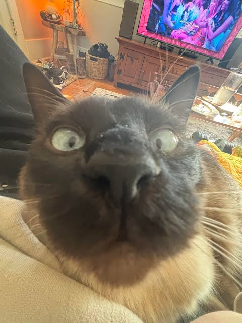

¿Qué puedes donar?
Alimentos
- Alimento para perros.
- Alimento para gatos.
- Alimento húmedo para mascotas.
Artículos de descanso
- Mantas limpias.
- Camas para mascotas.
- Transportadoras en buen estado.
Artículos de limpieza
- Bolsas para recoger desechos.
- Arena para gatos.
- Toallas limpias.
- Productos de limpieza adecuados.

¡Gracias por ayudar!
Todas las donaciones pueden ayudar a mejorar la vida de los animales. Antes de llevar artículos, consulta cuáles necesita el centro de acopio.